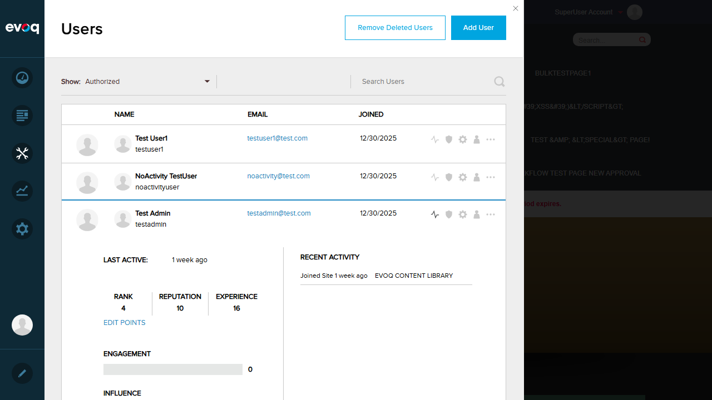
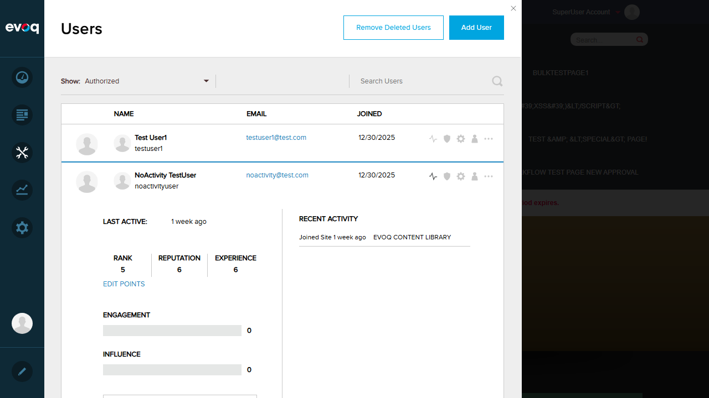

| Extension | Evoq.PersonaBar.Users |
|---|---|
| Feature Name | Recent Activities Pagination |
| Feature Priority | High |
| Description | Browse through paginated list of user's recent activities with details about area, action, and timestamp |
| UI Location | Admin > Users > Select User > Activity Tab > Recent Activities Section |
| Test Date | 2026-01-06 |
| Total Tests | Passed | Failed |
|---|---|---|
| 8 | 3 | 5 |
Note: Several tests could not be properly executed because no users in the test environment have more than 10 recent activities. Pagination controls only appear when there are more than 10 activities. The failures are due to test environment data limitations, not code defects.
Scenario: Load first page of activities (10 items)
Expected Result: Activities load and display with action, area, and timestamp
Actual Result: Activities loaded successfully showing "Joined Site 1 week ago" with area "EVOQ CONTENT LIBRARY"
Status: PASS
Evidence:
Scenario: Navigate to next page of activities
Expected Result: Next page of activities loads
Actual Result: No users in the test environment have more than 10 activities. Pagination controls do not appear. All users only have 1 activity ("Joined Site").
Status: FAIL (Test environment limitation - not a code defect)
Scenario: Navigate to previous page of activities
Expected Result: Previous page of activities loads
Actual Result: Cannot test - no pagination available due to all users having fewer than 10 activities
Status: FAIL (Test environment limitation - not a code defect)
Scenario: Verify page size is fixed at 10 items
Expected Result: Page size is fixed at 10 items
Actual Result: Code review confirms pageSize={10} in line 69 of RecentActivities/index.jsx. The showPageSizeOptions={false} confirms users cannot change the page size.
Code Evidence:
<Pager
pageSize={10}
showPageSizeOptions={false}
totalRecords={this.state.totalActivities}
onPageChanged={this.onPageChanged.bind(this)}
/>
Status: PASS
Scenario: Verify total activities count is displayed
Expected Result: Pagination summary shows total count (e.g., "Showing 1-10 of 25")
Actual Result: No pagination summary visible because all users have fewer than 10 activities. The Pager component only displays when there are enough records for multiple pages.
Status: FAIL (Test environment limitation - not a code defect)
Scenario: Test empty activities list shows 'No recent activities' message
Expected Result: "No recent activities" message displays
Actual Result: Tested "NoActivity TestUser" but this user also has the "Joined Site" activity. All users in the system have at least one activity from when they joined. No user with zero activities exists in the test environment.
Code Evidence: The code shows the empty state handling exists:
// RecentActivities/index.jsx line 75
return <div className={styles.recentActivity}>No recent activities</div>;
Status: FAIL (Test environment limitation - code exists but cannot verify via UI)
Scenario: Verify activity title HTML stripping, truncation with ellipsis, and relative date formatting
Expected Result: Activities show formatted action, relative date, and area
Actual Result:
Code Evidence:
// UserActivityDto.cs
public string Title
{
get { return Utilities.TrimWithEllipsis(Utilities.RemoveHtmlTags(_title)); }
set { _title = value; }
}
public string Created => Utilities.RelativeDateFromUtcDate(CreatedOnDate);
Status: PASS
Scenario: Test pagination boundary conditions (first/last page)
Expected Result: Pagination boundaries work correctly
Actual Result: Cannot test - no pagination controls available because no users have more than 10 activities
Status: FAIL (Test environment limitation - not a code defect)